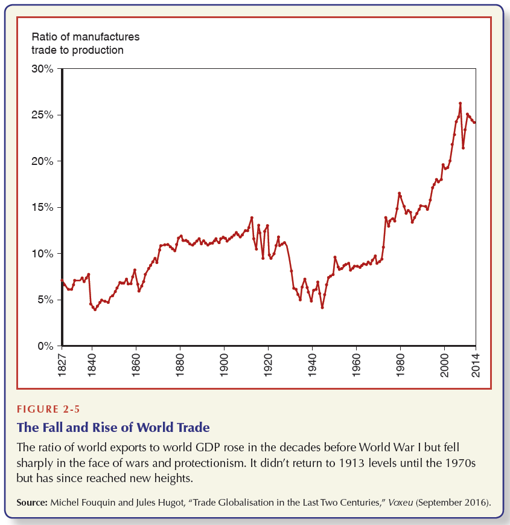
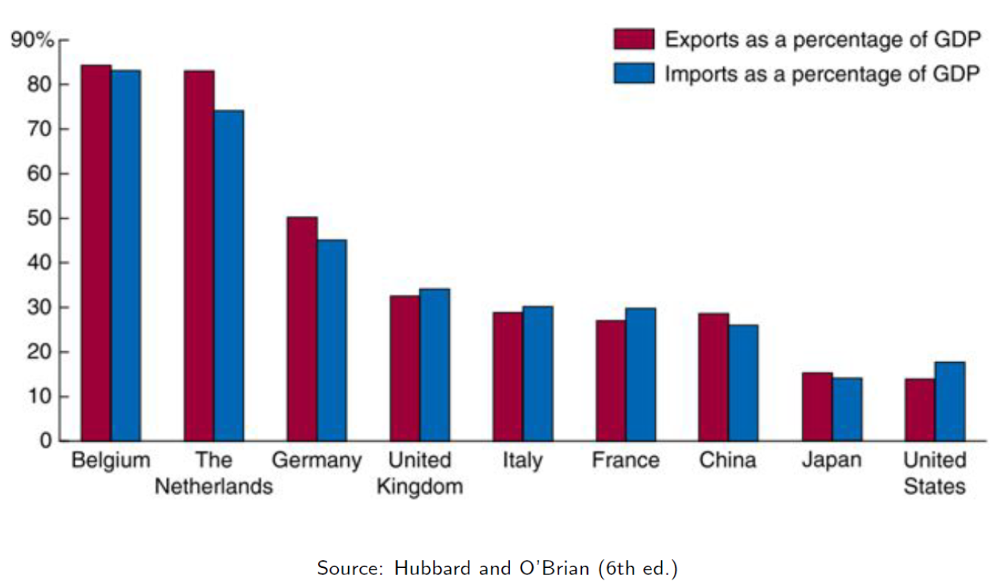

International Integration (Good & Bad)
Generally, we think of integration of nations to bring many benefits
Innovation in products/services
More affordable goods
Flow of investments toward scarce resource nations
But this process can also make nations vulnerable to foreign economic problems
. . .
The Great Recession was a US Housing and Banking crisis
The 1970s oil price shocks
The Covid Pandemic
- that leaked to the world
- led to many Latin American countries having account deficits due to foreign debt accumulation
- meant that exporting nations were not able to produce at the same pace which slowed down all economies through trade flow linkages
Trade Integration
Let’s define it
Trade Integration can be roughly measured through 4 criteria:
- Trade Flows
- Capital Flows
- People/Labor Flows
- Similarity of prices in different markets
World Trade Movement
Trade Growth Has Outpaced GDP Growth

Trade to GDP Ratio
\[\begin{align*} \dfrac{(\text{Exports} + \text{Imports})}{GDP} \end{align*}\]
Trade & Country Size

In Trade Size Can Matter

Importance of Trade Varies by Country

Trade Overview
- Trade is important to nations and increasingly so
- Flows of Trade (Imports/Exports) represent a large proportion of nations GDP
- Trade openness varies by country size
. . .
Questions come to mind:
- Why do countries trade so much?
- What do they gain from trading?
- How does trade impact other aspects of the economy (labor market, geopolitics, etc)?
What Goods do Countries Trade?
Costa Rica

United States

How Did They End Up There?
Countries specialize and export core products
Trading goods that they are “best” at producing results in gains from trade
Specialization comes from where each country has a Comparative Advantage
. . .
What factors, other than the fundamentals, influence specialization?
Foreign Direct Investment (FDI)
Knowledge Sharing/Diffusion
Cross-border Migration Shocks
And much more
Why Does Trade Continue to Grow?
Trade is not frictionless. There are costs to trading with other nations
Trade growth can be largely attributed to reduced trade barriers over time
This is called trade liberalization
. . .
Some examples are:
Costs of shipping/transport are lower
Tariff rate reductions
Preferential Trade Agreements
Relaxing non-tariff measures (quotas)
Reduced Tariff Rates

Lower Transport Costs


Economics Can Be Very Complex
Explicit trade barriers have fallen over time, coinciding with the growth of trade relative to economic activity
Hidden barriers are the next hurdle. Much of the current literature suggests is far more impactful than existing tariff rates
- Current trade theory and literature focuss on heterogenous agent models, which was orignally created to explain why not every firm functions as an exporter
We will not be diving that deep into international trade. Our primary goal is to get a good understanding of how/why it works and understanding basic dynamics.
- Hidden barriers can be subsidies, labor clauses in FTAs, quality requirements, etc.
Overview of Trade Theory
Why does trade occur? This is our main question.
There are two strands within the field of international trade:
. . .
I. Neoclassical Models of Trade (‘Old Theories’):
- Ricardian Model \(\Rightarrow\) Technology differences spur trade
- Hecksher-Ohlin Model \(\Rightarrow\) Resource differences spur trade
II. ‘New’ Trade Theory:
- Krugman Model \(\Rightarrow\) Demand/Want of variety spurs trade
- Melits Model \(\Rightarrow\) Heterogenous firms drive trade
Next Steps
We will begin to look at the theory, starting with the Ricardo Model. It involves:
- Single factor of production (labor)
- Two countries (home,foreign)
- Technology differences across countries
It will be key to note the models attributes as they will all have some key differences. Each model will also have predictable outcomes.
For Next Class
- Read Ch.1: Introduction to the World Economy
- Skim through Krugman (1993) “What do Undergrads Need to Know About Trade”
- Read Ch.3: Comparative Advantage and the Gains from Trade